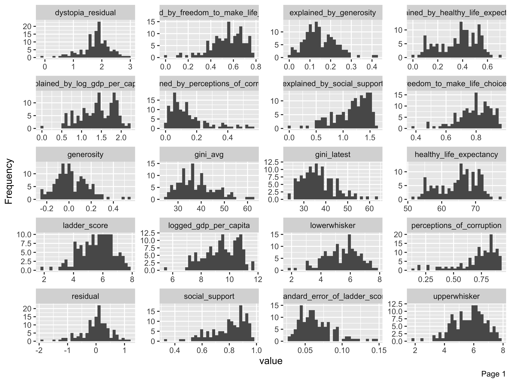

library(tidyverse) # to do tidyverse things
library(tidylog) # to get a log of what's happening to the data
library(janitor) # tools for data cleaningIntroduction
What makes us happy?
A subjective question to be sure. The things that make me happy might not do much for you, and what brings you happiness might not work for me. To each their own? Or are there some basic things that boost our collective happiness, things most of us agree are good?
There have been attempts to answer the question in a universal way, by focusing on broad quality of life measures and activities. A perfect question for social scientists to dig into, and so they have.
Among the most referenced measures is the World Happiness Report. A yearly multi-chapter report published by Sustainable Development Solutions Network, using responses from the Gallup World Poll.
For this post (and at least one, maybe more to come) I want to dig into the data that has been made available. Every year the WHR research team releases data for chapter two, which has composite scores by country based on the ladder score question, along with related questions from the survey. They add logged GDP and other data in the full chapter report. GDP is made available in the chapter data for release.
The Data
The Chapter 2 data has been consistently offered for download for years now. There are two datasets:
- Data for Figure 1 includes the three three-year rolling average of the happiness ladder question (a 0-10 scale, described in the statistical appendix) along with related measures, aggregated by country. We also get the ladder score of a hypothetical dystopian country.
- Data for Table 1 has the output of the OLS regression model to predict each country’s ladder score.
The Figure 1 data also includes OLS output in form of the percent of each country’s happiness score that could be attributed to the component variables. Another column in the Figure 1 set includes a column with the dystopia score plus the country’s residual of the actual and predicted ladder scores. In the data loading code below you’ll see that I added a column separating out the residual.
Both the report’s statisitcal appendix (downloads a pdf) and on-line version of Chapter 2 explain everything in more detail so I won’t repeat it here.
I’ll be using r for all steps of the workflow; importing the data, cleaning, analysing, and visualising. So let’s go…
For this post, I want to focus on Exploratory Data Analysis (EDA). It’s the part of the analytical process where you get a broad overview of the data…look for things that need cleaning, look for distributions and relationships. In the past I’d build my own charts and tables, and that took quite a lot of time and mental energy.
Thankfully there are packages to speed up the work. So to get a quick look at this first set of WHR data, I’ll test-drive the EDA packages DataExplorer by Boxuan Cui, and Roland Krasser’s explorer.
To start with let’s load packages to import and clean the data. These are the three packages I use for almost every analysis in r.
To get the WHR data into RStudio you can go two ways. First is to download the sheet to your local machine and read in:
# read in WHR data, fix country names for later merges
whr23_fig2_1a <- readxl::read_excel("yourfilepath/DataForFigure2.1WHR2023.xls") %>%
clean_names() %>%
as_tibble() %>%
mutate(residual = dystopia_residual - ladder_score_in_dystopia) %>%
select(-residual_is_dystopia_minus_dystopia_plus_residual) %>%
mutate(whr_year = 2023) %>%
mutate(country_name = case_when(
country_name == "Czechia" ~ "Czech Republic",
country_name == "State of Palestine" ~ "Palestinian Territories",
country_name == "Turkiye" ~ "Turkey",
TRUE ~ country_name))You could also use curl to download straight from the WHR page:
library(readxl)
url1 <- "https://happiness-report.s3.amazonaws.com/2023/DataForFigure2.1WHR2023.xls"
destfile1 <- "DataForFigure2_1WHR2023.xls"
curl::curl_download(url1, destfile1)
whr23_fig2_1a <- readxl::read_excel(destfile1)
## %>% (and then the same cleaning steps shown above)The data from the WHR does not include the world region for each country, something I will want for further analysis. I’m not sure what the source is for the region grouping they are using. I found a file with a region column on Kaggle for the 2021 survey, so downloaded that and merged on country name.
# read in kaggle file with region names
ctreg <- readr::read_csv("yourfilepath/world-happiness-report-2021.csv") %>%
as_tibble() %>%
clean_names() %>%
select (country_name, region = regional_indicator)
# join to whr23 on country, add missing region for Congo (Kinshasa)
whr23_fig2_1 <- whr23_fig2_1a %>%
merge(ctreg, all = TRUE) %>%
as_tibble() %>%
select(country_name, region, whr_year, everything()) %>%
mutate(region = ifelse(
country_name == "Congo (Kinshasa)", "Sub-Saharan Africa", region))Another way to do it is to hard code them. I had to go back to the 2018 report to find a list.
Regardless, we now have a dataset, so let’s explore it.
EDA with DataExplorer - Overview
Let’s start with DataExplorer. The create_report() function runs the full set of native reports and outputs to a directory of your choosing with a filename of your choosing. But for a review I want to go through a few of the individual report elements.
introduce() outputs a table showing rows, columns and other information. If you want to see this information in chart form, plot_intro() and plot_missing() do that.
## DataExplorer for EDA
library(DataExplorer) # EDA tools
# summary of completes, missings
introduce(whr23_fig2_1)
#> # A tibble: 1 × 9
#> rows columns discrete_columns continuous_columns all_missing_columns
#> <int> <int> <int> <int> <int>
#> 1 137 35 10 25 0
#> # ℹ 4 more variables: total_missing_values <int>, complete_rows <int>,
#> # total_observations <int>, memory_usage <dbl>
plot_intro(whr23_fig2_1)plot_missing(whr23_fig2_1)There are hardly any missing values in the set, which will make analysis easier.
EDA with DataExplorer - Distributions
Ok, so how about the distribution of our variables? plot_bar() takes all discrete variables and plot_histogram() runs for the continuous variables. Depending on how many columns of each type your dataset has you will need to play with the nrow and ncol options so that everything renders to the RStudio plot column. For the histograms you can change the number of binsm change the x-axis to log or some other option (the default is continuous). You can also customize the look a bit with passing arguments to the ggtheme = and theme_config() functions.
plot_bar(whr23_fig2_1)
For the discrete variable bar charts, for this dataset there isn’t much to look at. But for a dataset with demographic variables, geographic places, etc. this would be very helpful.
plot_histogram(whr23_fig2_1, nrow = 5L)
The histograms render in alpha order of the variable name, not order in the dataset. When the plots render, we look through them to see if there are any unusual skews or other things we want to watch out for depending on the type of analyses to be run. In this case there are a few solitary bars in some of the histograms, like values above 0.4 in the generosity column. But nothing too skewed so that if we took a closer look at distributions by way of means or interquartiles that we’d be too worried.
EDA with DataExplorer - Correlations
Now for my favorite part of this package, a correlation matrix! We’ll run plot_correlation() without the year, dystopia ladder score, and whiskers and make sure to only do continuous. We can also adjust things like the type of correlation (default is pearson), the size of the coefficient labels in the chart and other elements.
## correlation...remove some columns, clean NA in pipe, continuous only, change text size
whr23_fig2_1 %>%
select(-whr_year, -ladder_score_in_dystopia, -upperwhisker, -lowerwhisker, -year,
-ginifill, -gini, -gini_latest, -gini_avg) %>%
filter(!is.na(residual)) %>%
plot_correlation(type = "continuous", geom_text_args = list("size" = 3))The way my brain works is to look for visual patterns and relationships. So a correlation matrix like this is perfect to give me a broad view of how the continuous variables relate to each other. The matrix heatmap returns positive relationships in red, negative in blue. I first want to look at the relationships of the component variables to the ladder score, and we see positive associations for everything except for perception of corruption, which makes sense because you’d likely report being less happy if you lived in a corrupt country.
The weakest association is between generosity, which comes from a question asking “Have you donated to charity in the past month?” So while donations to charity are a good thing, they don’t necessarily move the needle on happiness. At least not in the aggregate. But maybe by country or region? Something to take a look at later. This is why we do EDA…
We also see that we could have run this without the “explained by…” columns as they have the same coefficients as the component variables.
EDA with DataExplorer - Scatterplots
As much as I love a correlation matrix, I love scatterplots even more. I clearly have a thing for patterns and relationships. The plot_scatterplot function returns plots for all the variables you pass along, against the one you call in the by = argument. Here we want to see the association between the ladder score and component variables from Chapter 2.
plot_scatterplot(
whr23_fig2_1 %>% select(ladder_score, social_support:perceptions_of_corruption, dystopia_residual, residual),
by = "ladder_score", nrow = 3L)We know from the correlation heatmap that we don’t need the “explained_by_*” variables as they were redundant to the component variables. The x/y distributions here confirm what we saw in the correlations, including the slightly negative relationship between the ladder score and perceptions of corruption, and that generosity was a weaker relationship.
While the scatterplot function does allow for some plot customization, one I tried but couldn’t get to work was using the geom_point_args() call to color the dots by region, like this using ggplot:
whr23_fig2_1 %>%
ggplot(aes(x = perceptions_of_corruption, y = ladder_score)) +
geom_point(aes(color = region)) +
theme(legend.position = "bottom")There are a few other functions offered to do principal component analysis and qq (quantile-quantile) plots, but they did not help much with this dataset.
Overall there are plenty of helpful features in DataExplorer that make it worthwhile to use for EDA. I’d like the ability to color scatterplots by a discrete variable, or to facet the histograms or scatterplots, but as is, a robust EDA tool.
EDA with Explore - Interactive EDA
The explore package
The best function here is explore(dataset), which launches a shiny window with four tabs.
The “overview” tab shown here, displays a table with mean, min, max, and unique & missing value counts by variable.
The “variable” tab allows you to explore variables on their own…
…or in relation to one another. You not only get a chart appropriate to the variable type (categoricals with bars, continuous with area plots), but when you target against another variable you get a scatterplot.
The explain tab runs a decision tree against a target variable, and the data tab displays the entire dataset as a table, all rows and all columns. So before launching this you may want to be mindful of running it against too large a dataset.
If you don’t want to launch the shiny app, you can output a report in html…
## creates html report of all individual reports
whr23_fig2_1 %>%
report(output_dir = "~/data/World Happiness Report")…or run select features individually, depending on what you need….
whr23_fig2_1 %>%
select(ladder_score, social_support:perceptions_of_corruption,
explained_by_log_gdp_per_capita:residual) %>%
describe_all()
#> select: dropped 21 variables (country_name, iso3c, region, region_whr, whr_year, …)
#> # A tibble: 14 × 8
#> variable type na na_pct unique min mean max
#> <chr> <chr> <int> <dbl> <int> <dbl> <dbl> <dbl>
#> 1 ladder_score dbl 0 0 137 1.86 5.54 7.8
#> 2 social_support dbl 0 0 137 0.34 0.8 0.98
#> 3 healthy_life_expectancy dbl 1 0.7 137 51.5 65.0 77.3
#> 4 freedom_to_make_life_choices dbl 0 0 137 0.38 0.79 0.96
#> 5 generosity dbl 0 0 137 -0.25 0.02 0.53
#> 6 perceptions_of_corruption dbl 0 0 137 0.15 0.73 0.93
#> 7 explained_by_log_gdp_per_capita dbl 0 0 137 0 1.41 2.2
#> 8 explained_by_social_support dbl 0 0 137 0 1.16 1.62
#> 9 explained_by_healthy_life_expect… dbl 1 0.7 137 0 0.37 0.7
#> 10 explained_by_freedom_to_make_lif… dbl 0 0 137 0 0.54 0.77
#> 11 explained_by_generosity dbl 0 0 137 0 0.15 0.42
#> 12 explained_by_perceptions_of_corr… dbl 0 0 137 0 0.15 0.56
#> 13 dystopia_residual dbl 1 0.7 137 -0.11 1.78 2.95
#> 14 residual dbl 1 0.7 137 -1.89 0 1.18whr23_fig2_1 %>%
explore(ladder_score)The main vignette and reference guide are both very comprehensive, so no need to repeat too much here. But there are some fun features like decision trees, and lots of flexibilty to explore multiple variables in relation to each other.
EDA with Skimr
Then there is skimr, one of the first EDA packages that I remember seeing. If there’s a feature I like most, it’s the basic skim() function, which returns means & other distributions, as well as little histograms.
library(skimr) whr23_fig2_1 %>% select(ladder_score, social_support:perceptions_of_corruption, residual) %>% skim() #> select: dropped 28 variables (country_name, iso3c, region, region_whr, whr_year, …)Data summary Name Piped data Number of rows 137 Number of columns 7 _______________________ Column type frequency: numeric 7 ________________________ Group variables None Variable type: numeric
skim_variable n_missing complete_rate mean sd p0 p25 p50 p75 p100 hist ladder_score 0 1.00 5.54 1.14 1.86 4.72 5.68 6.33 7.80 ▁▂▆▇▃ social_support 0 1.00 0.80 0.13 0.34 0.72 0.83 0.90 0.98 ▁▂▃▆▇ healthy_life_expectancy 1 0.99 64.97 5.75 51.53 60.65 65.84 69.41 77.28 ▃▃▇▇▂ freedom_to_make_life_choices 0 1.00 0.79 0.11 0.38 0.72 0.80 0.87 0.96 ▁▁▃▇▇ generosity 0 1.00 0.02 0.14 -0.25 -0.07 0.00 0.12 0.53 ▃▇▅▁▁ perceptions_of_corruption 0 1.00 0.73 0.18 0.15 0.67 0.77 0.85 0.93 ▁▁▁▅▇ residual 1 0.99 0.00 0.50 -1.89 -0.22 0.07 0.30 1.18 ▁▂▅▇▂
It’s especially helpful on small and medium-sized datasets, to get a quick overview and look for outliers.
Happiness data takeaways
Using these packages for EDA on the happiness data, we learned that:
- There are not many missing values in the data.
- All of the component variables except generosity have strong positive correlations with the happiness score.
- Perception of corruption has, as expected, a negative association with happiness.
We also came away wanting to know a bit more about differences by region, so that’s a good starting point for the next post, which will be a slightly deeper dive into the data.
Conclusion
There is no one perfect EDA package that suits all needs for any dataset. DataExplorer has some robust features, particularly in this usecase the correlation heatmap and the scatterplots. I loved the native reports and shiny app in explorer. I had planned to look at correlationfunnel, but it’s only really suited to a use-case with binary outcomes such as customer sign-up, churn, employee retention, college admissions outcomes (admits, yield), student success outcomes like retention and graduation. I’ll have to find another dataset to try that package. Doing these package test-drives reminded me that skimr is also very useful.
Going forward I’ll be setting up a more deliberate EDA workflow using parts of each of these packages, depending on the size of the dataset and the main questions I’d have of the data.